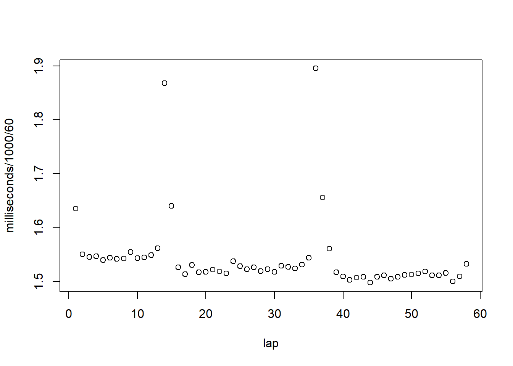
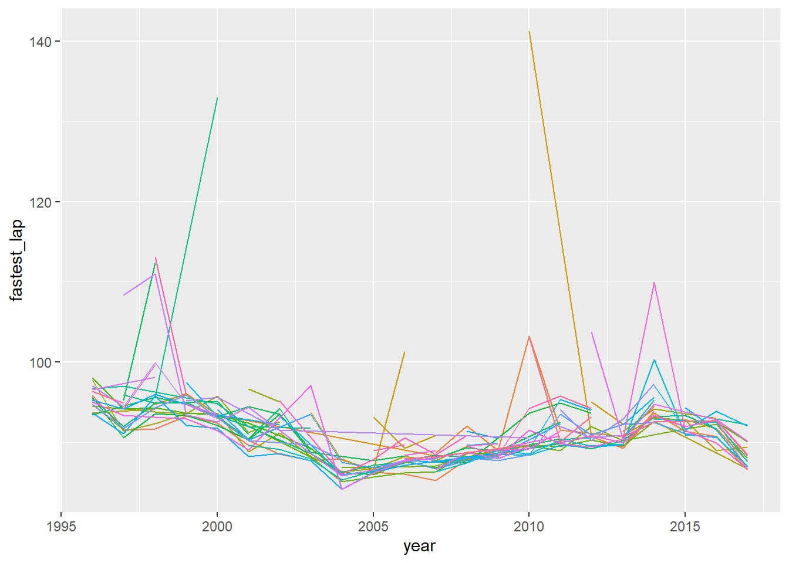
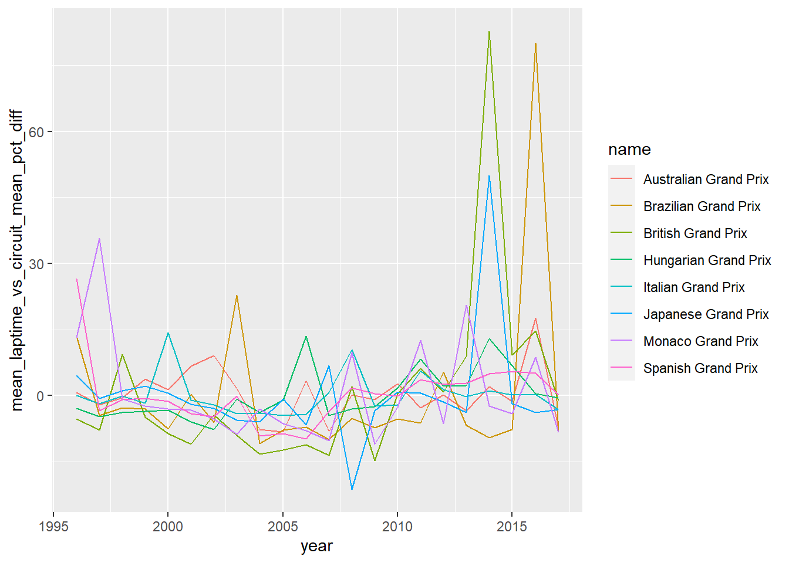
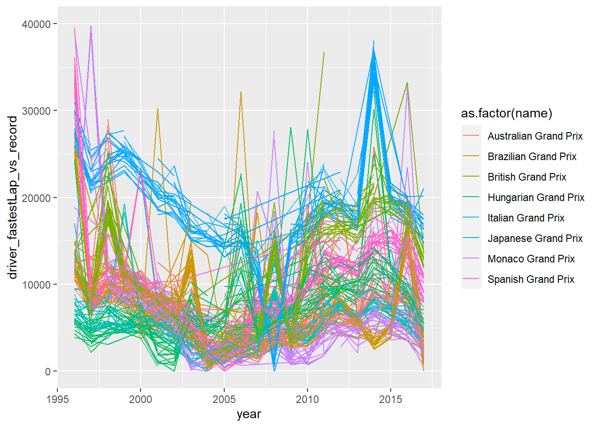
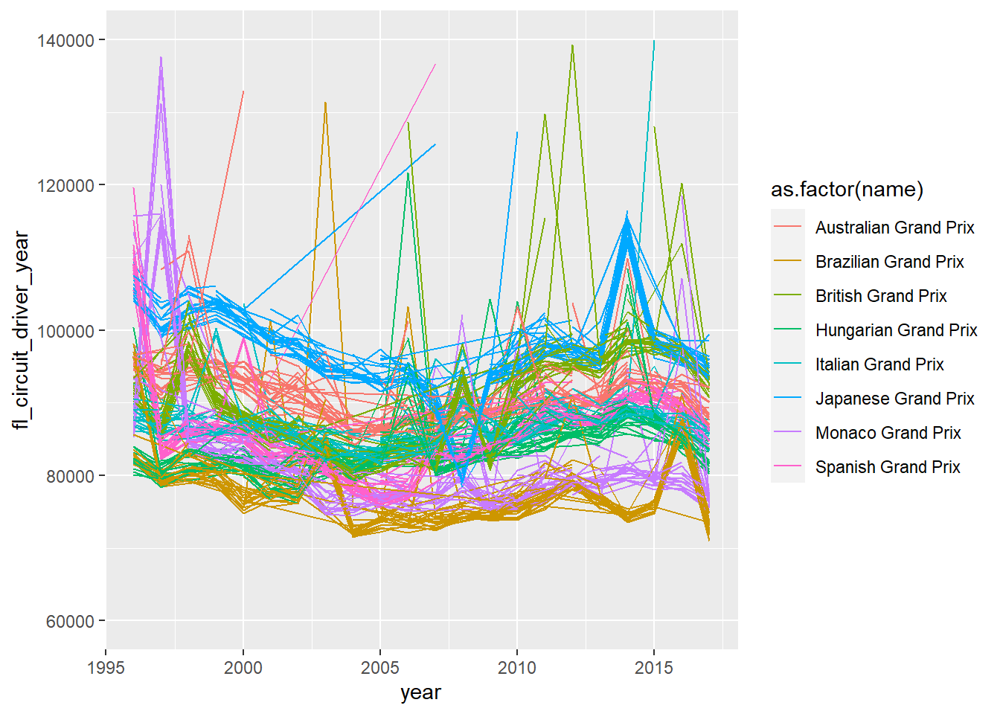
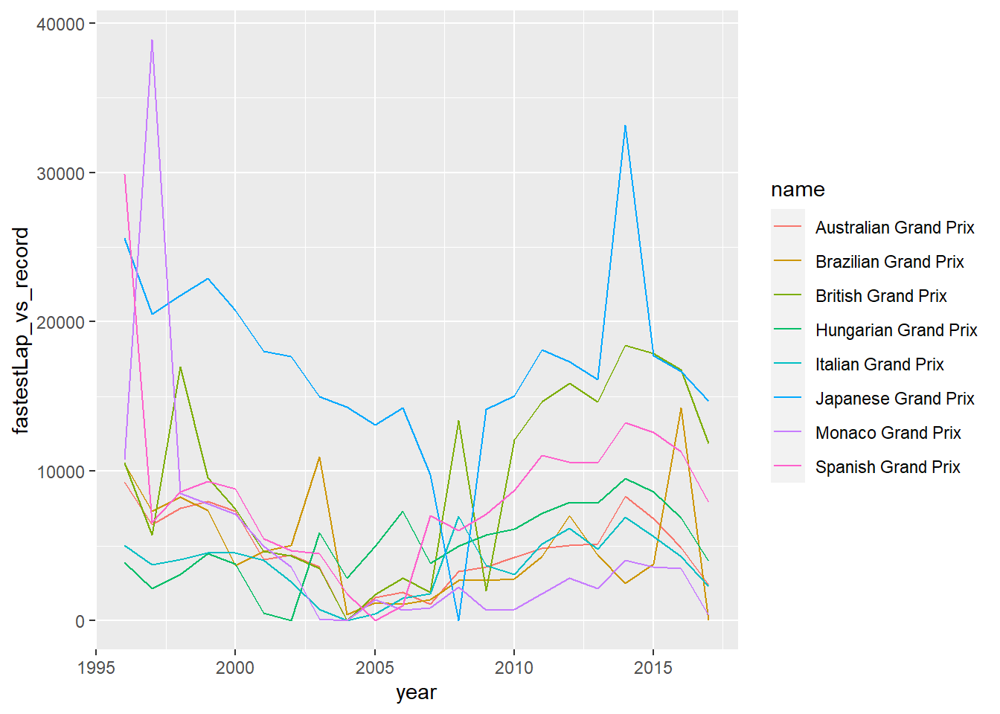

data.table?data.table is an R package designed to make working with
data as easy and efficient as it can possibly be. At a first glance it
appears to update the standard R object data.frame. In case
you haven’t used them, you can still follow this tutorial. Basically
data.frames are R’s most flexible and broadly used way to
store data with a ‘spreadsheet’ structure, i.e., rows and columns.
But data.table adds a lot of functionality besides just
making data handling infinitely better. And it takes (and perfects)
ideas from all the best data handling tools:
tibble.dplyr.*ply functions.magrittr (though …
magrittr and native
pipes are still great and work excellently in tandem with
data.table)SQL.reshape2.GRanges …And because it does all this so elegantly, it is super easy to learn. To learn the most important stuff, let’s run an analysis on some Formula 1 racing data, because, of course.
Follow along in an Rstudio session. Make sure you run the commands, and most importantly, experiment with them.
install.packages("data.table")
require(data.table)The data we’ll work with are from here. You can also it on the Spartan storage server at /data/gpfs/projects/punim1869/shared_data/bioinfo_tutorials/f1.
Most text-based ways of storing data consist of lines of text (one
per row), and a separation character delimiting the column entries of
each row. For example, in the csv ([c]omma-[s]eparated
[v]alue) format,
"a","row","with",7,"columns","would","look","like","this".
Note that in X-separated formats, quote marks are often used to indicate
when a column contains text (c.f., say, numbers) because, to a computer,
numbers and the strings of text characters that represent them are very
different things.
The alternative to text-based data storage is binary files, which is a topic for another day.
data.table has its own table parsing function,
fread() ([f]ast [read]). It assumes you are giving it some
X-separated table and investigates the top of a the file (10,000 lines
by default) and tries to work out what the separator is and what the
kind of data in each column is, then reads it. Use it to read in the
data about lap times, drivers, and races—something like the
following:
lt <- fread("data/lapTimes.csv")
dr <- fread("data/drivers.csv")
ra <- fread("data/races.csv")The variables dr and lt now contain
data.table objects. Since these are enhanced
data.frames, we can do data.frame type things with them,
such as printing the contents by running the variable name alone:
lt## raceId driverId lap position time milliseconds
## 1: 841 20 1 1 1:38.109 98109
## 2: 841 20 2 1 1:33.006 93006
## 3: 841 20 3 1 1:32.713 92713
## 4: 841 20 4 1 1:32.803 92803
## 5: 841 20 5 1 1:32.342 92342
## ---
## 426629: 988 825 50 13 1:43.928 103928
## 426630: 988 825 51 13 1:44.138 104138
## 426631: 988 825 52 13 1:43.934 103934
## 426632: 988 825 53 13 1:44.164 104164
## 426633: 988 825 54 13 1:44.285 104285Notice it prints in a useful format showing the top and bottom five rows.
There are some useful arguments you can give to fread()
as necessary:
fread(header=F)
fread() not to assume the top row is column
labels. It will call the columns “V1”, “V2”, …
“Vn” by default, unless …fread(col.names=c("names","for","columns","go","in","this","vector"))
fread(select=1:3)
select=c(6,3,5) we would get those columns in that
order.Is done with the normal R functions like write.csv and
saveRDS.
A data.table is primarily manipulated using a
square-bracket syntax similar to data.frames. So you can,
for example, provide indices for rows and columns in the first two
arguments to select them, just like regular
data.frames:
lt[5,]## raceId driverId lap position time milliseconds
## 1: 841 20 5 1 1:32.342 92342lt[1:5]## raceId driverId lap position time milliseconds
## 1: 841 20 1 1 1:38.109 98109
## 2: 841 20 2 1 1:33.006 93006
## 3: 841 20 3 1 1:32.713 92713
## 4: 841 20 4 1 1:32.803 92803
## 5: 841 20 5 1 1:32.342 92342lt[,1]## raceId
## 1: 841
## 2: 841
## 3: 841
## 4: 841
## 5: 841
## ---
## 426629: 988
## 426630: 988
## 426631: 988
## 426632: 988
## 426633: 988lt[,"lap"]## lap
## 1: 1
## 2: 2
## 3: 3
## 4: 4
## 5: 5
## ---
## 426629: 50
## 426630: 51
## 426631: 52
## 426632: 53
## 426633: 54lt[,c("lap","time")]## lap time
## 1: 1 1:38.109
## 2: 2 1:33.006
## 3: 3 1:32.713
## 4: 4 1:32.803
## 5: 5 1:32.342
## ---
## 426629: 50 1:43.928
## 426630: 51 1:44.138
## 426631: 52 1:43.934
## 426632: 53 1:44.164
## 426633: 54 1:44.285And you can always use the dollar sign operator $ to
extract a column as a vector …
dr$forename[1:10]## [1] "Lewis" "Nick" "Nico" "Fernando" "Heikki" "Kazuki"
## [7] "S̩bastien" "Kimi" "Robert" "Timo"# or perhaps you prefer ...
dr[1:10]$forename## [1] "Lewis" "Nick" "Nico" "Fernando" "Heikki" "Kazuki"
## [7] "S̩bastien" "Kimi" "Robert" "Timo"If you want to select specific rows based on some property, you could use logical vectors (vectors of TRUEs and FALSEs that indicate whether a row should be selected):
selectMe <- lt$lap < 3
selectMe[1:10]## [1] TRUE TRUE FALSE FALSE FALSE FALSE FALSE FALSE FALSE FALSElt[selectMe,]## raceId driverId lap position time milliseconds
## 1: 841 20 1 1 1:38.109 98109
## 2: 841 20 2 1 1:33.006 93006
## 3: 841 1 1 2 1:40.573 100573
## 4: 841 1 2 2 1:33.774 93774
## 5: 841 17 1 3 1:41.467 101467
## ---
## 16191: 988 843 2 18 1:48.460 108460
## 16192: 988 154 1 14 1:55.433 115433
## 16193: 988 154 2 14 1:47.792 107792
## 16194: 988 825 1 20 2:00.490 120490
## 16195: 988 825 2 20 1:48.699 108699rm(selectMe)
# Four steps ... really?… In reality, these operations are rarely used.
data.table’s natural method of doing things is almost
always better. Instead, we think of the indexing operator as having
three fields, that we use for different purposes. We will learn them in
order, but also pick up some other tricks on the way. To begin with,
memorise this:
dataTable[ <SELECT> , <DO_SOMETHING> , <GROUP_BY> ]
While you’re working in the indexing fields, you can simply refer to column names of the table directly, and they will be treated as vectors. Which, as far as the computer’s understanding of a table goes, is exactly what they are.
The output of whatever you write in the SELECT field is used to (surprise!) select rows. Here are some typical examples:
lt[lap<3,]## raceId driverId lap position time milliseconds
## 1: 841 20 1 1 1:38.109 98109
## 2: 841 20 2 1 1:33.006 93006
## 3: 841 1 1 2 1:40.573 100573
## 4: 841 1 2 2 1:33.774 93774
## 5: 841 17 1 3 1:41.467 101467
## ---
## 16191: 988 843 2 18 1:48.460 108460
## 16192: 988 154 1 14 1:55.433 115433
## 16193: 988 154 2 14 1:47.792 107792
## 16194: 988 825 1 20 2:00.490 120490
## 16195: 988 825 2 20 1:48.699 108699lt[lap<3 & driverId==20,]## raceId driverId lap position time milliseconds
## 1: 841 20 1 1 1:38.109 98109
## 2: 841 20 2 1 1:33.006 93006
## 3: 842 20 1 1 1:49.614 109614
## 4: 842 20 2 1 1:44.539 104539
## 5: 843 20 1 3 1:47.942 107942
## ---
## 377: 986 20 2 19 1:50.130 110130
## 378: 987 20 1 1 1:52.494 112494
## 379: 987 20 2 1 2:18.392 138392
## 380: 988 20 1 3 1:47.471 107471
## 381: 988 20 2 3 1:43.632 103632This works because (say) lap<3 outputs a logical
vector that is TRUE when lap contains 1 or 2, and FALSE otherwise. But
what you output can also be numbers referring to rows. A classic example
is this trick used to sort the rows by some column …
lt[order(milliseconds),]## raceId driverId lap position time milliseconds
## 1: 977 1 69 4 1:07.411 67411
## 2: 977 1 65 4 1:07.424 67424
## 3: 977 817 69 3 1:07.442 67442
## 4: 977 8 68 5 1:07.486 67486
## 5: 977 20 69 2 1:07.496 67496
## ---
## 426629: 847 20 25 1 2:05:05.152 7505152
## 426630: 847 155 25 2 2:05:06.095 7506095
## 426631: 847 808 25 5 2:05:06.243 7506243
## 426632: 847 13 25 3 2:05:06.656 7506656
## 426633: 847 2 25 4 2:05:07.547 7507547Note the comma is optional but you should write it anyway for good reasons that you can ask me about.
Also note in Rstudio you can use <tab> to
autocomplete column names while you work inside the indexing fields.
.NInside the indexing fields, .N always contains the
number of rows of the table (or the group; see later). Hence, to reverse
the table:
lt[.N:1,]## raceId driverId lap position time milliseconds
## 1: 988 825 54 13 1:44.285 104285
## 2: 988 825 53 13 1:44.164 104164
## 3: 988 825 52 13 1:43.934 103934
## 4: 988 825 51 13 1:44.138 104138
## 5: 988 825 50 13 1:43.928 103928
## ---
## 426629: 841 20 5 1 1:32.342 92342
## 426630: 841 20 4 1 1:32.803 92803
## 426631: 841 20 3 1 1:32.713 92713
## 426632: 841 20 2 1 1:33.006 93006
## 426633: 841 20 1 1 1:38.109 98109These are exceptionally useful for selection:
The SELECT field can also be used for one ofdata.table’s
most powerful functions, merging tables together. Notice in
lt that the drivers and races are given numbers, not
names.
If you look inside ra and dr, you will
notice these tables allow us to see what number corresponds to what
driver/race.
Merging allows us to use one data.table to look up what
rows of a second data.table it matches according to the
values in some column that occurs in both tables (say, driverId). When
you think about it, it is almost like the rows of one table are
selecting which rows of a second data table to join with. This
is why it makes sense to use the SELECT indexing field for merging.
To do it, we just put the selecting data.table in the
SELECT field of the other data.table, and then add an
argument listing which column(s) to look for matches on.
dr[lt,on=list(driverId)]## driverId driverRef number code forename surname dob
## 1: 20 vettel 5 VET Sebastian Vettel 03/07/1987
## 2: 20 vettel 5 VET Sebastian Vettel 03/07/1987
## 3: 20 vettel 5 VET Sebastian Vettel 03/07/1987
## 4: 20 vettel 5 VET Sebastian Vettel 03/07/1987
## 5: 20 vettel 5 VET Sebastian Vettel 03/07/1987
## ---
## 426629: 825 kevin_magnussen 20 MAG Kevin Magnussen 05/10/1992
## 426630: 825 kevin_magnussen 20 MAG Kevin Magnussen 05/10/1992
## 426631: 825 kevin_magnussen 20 MAG Kevin Magnussen 05/10/1992
## 426632: 825 kevin_magnussen 20 MAG Kevin Magnussen 05/10/1992
## 426633: 825 kevin_magnussen 20 MAG Kevin Magnussen 05/10/1992
## nationality url raceId lap
## 1: German http://en.wikipedia.org/wiki/Sebastian_Vettel 841 1
## 2: German http://en.wikipedia.org/wiki/Sebastian_Vettel 841 2
## 3: German http://en.wikipedia.org/wiki/Sebastian_Vettel 841 3
## 4: German http://en.wikipedia.org/wiki/Sebastian_Vettel 841 4
## 5: German http://en.wikipedia.org/wiki/Sebastian_Vettel 841 5
## ---
## 426629: Danish http://en.wikipedia.org/wiki/Kevin_Magnussen 988 50
## 426630: Danish http://en.wikipedia.org/wiki/Kevin_Magnussen 988 51
## 426631: Danish http://en.wikipedia.org/wiki/Kevin_Magnussen 988 52
## 426632: Danish http://en.wikipedia.org/wiki/Kevin_Magnussen 988 53
## 426633: Danish http://en.wikipedia.org/wiki/Kevin_Magnussen 988 54
## position time milliseconds
## 1: 1 1:38.109 98109
## 2: 1 1:33.006 93006
## 3: 1 1:32.713 92713
## 4: 1 1:32.803 92803
## 5: 1 1:32.342 92342
## ---
## 426629: 13 1:43.928 103928
## 426630: 13 1:44.138 104138
## 426631: 13 1:43.934 103934
## 426632: 13 1:44.164 104164
## 426633: 13 1:44.285 104285Note data.table uses lists often so the dot character
. can be used as a shortcut for the list
function.
Also note you can join on more than one column, just add all the
names to the on= list.
For more flexibility, check the documentation with
?merge.data.table. You’ll find you can do cool things like
return rows that do NOT match. Let’s all our driver and race data into
the lap times table and move on.
lt <- dr[lt,on=.(driverId)]
lt <- ra[lt,on=.(raceId)]If you look at lt now, you’ll see what happens when a
column name overlaps between the tables, (besides the one being merged
on; in this case, “url”). data.table automatically renames
one of them (e.g.) “i.url”.
The DO_SOMETHING field is where the work gets done. Whether you are manipulating or adding or deleting columns, making calculations and returning the results, or even plotting, you do it all here. For example, you could do some calculation on the columns. Treat columns just like regular vectors. That’s how the computer thinks of them, so why shouldn’t you too?
#What was the fastest lap?
lt[, min(milliseconds) ]## [1] 67411# ... in minutes
lt[, min(milliseconds)/1000/60 ]## [1] 1.123517# ... at an Australian Grand Prix (notice we are now also using the SELECT field)
lt[ name=="Australian Grand Prix" , min(milliseconds)/1000/60 ]## [1] 1.402083# ... and what years did Sebastian Vettel race in Australia?
lt[ name=="Australian Grand Prix" , unique(year) ]## [1] 2011 2012 2013 2014 2015 2016 1996 1997 1998 1999 2000 2001 2002 2003 2004
## [16] 2005 2006 2007 2008 2009 2010 2017# ... so what lap was Sebastian Vettel's fastest lap at the 2011 Australian Grand Prix?
lt[ name=="Australian Grand Prix" & year==2011 & surname=="Vettel" , lap[which(milliseconds==min(milliseconds))] ]## [1] 44This last line could be cleaner. If we need to filter multiple times, we can just chain indexing operations together. This can simplify the above command as follows:
lt[ name=="Australian Grand Prix" & year==2011 & surname=="Vettel" , ][ milliseconds==min(milliseconds), lap ]## [1] 44Command chaining like this makes data.table function as
a pipe! Just like magrittr! Brilliant!
I wonder how this lap compares to his other laps that day? Well, we could make a quick plot …
lt[ name=="Australian Grand Prix" & year==2011 & surname=="Vettel" , plot(x=lap,y=milliseconds/1000/60) ]
## NULL… looks like he had two pit stops and got faster and faster as the race went on. Which is good because .. he won! See?
lt[ name=="Australian Grand Prix" & year==2011 & surname=="Vettel", ][ lap==max(lap), print(paste("At the end of the final lap, Vettel was in position",position,"!")) ]## [1] "At the end of the final lap, Vettel was in position 1 !"## [1] "At the end of the final lap, Vettel was in position 1 !"data.tableVery often, the result you want is anotherdata.table. To
do this, we use the list( item1_name=<vector> , item2_name=<another vector> )
Each item in the list will become a column. Let’s use it to generate
some summary statistics for all the races together:
#Remember, `.()` is a shortcut for `list()`
lt[ , .( fastest_race_lap = min(milliseconds) , number_of_drivers = length(unique(driverId)) , average_driver_hours_per_race=sum(milliseconds)/3600000/length(unique(driverId)) ) ] ## fastest_race_lap number_of_drivers average_driver_hours_per_race
## 1: 67411 123 92.3044Note, you can clean this code using multiple lines:
lt[ , .(
fastest_race_lap = min(milliseconds),
number_of_drivers = length(unique(driverId)),
average_driver_race_hours=sum(milliseconds)/3600000/length(unique(driverId))
)]A common use is to trim your data.table down to just
important columns. Let’s use it now to make a smaller table to look at
in future, one that only includes the Melbourne Grand Prix stats:
#(l)ap (t)imes, (A)ustralian GP
lt[,unique(name)]## [1] "Australian Grand Prix" "Malaysian Grand Prix"
## [3] "Chinese Grand Prix" "Turkish Grand Prix"
## [5] "Spanish Grand Prix" "Monaco Grand Prix"
## [7] "Canadian Grand Prix" "European Grand Prix"
## [9] "British Grand Prix" "German Grand Prix"
## [11] "Hungarian Grand Prix" "Belgian Grand Prix"
## [13] "Italian Grand Prix" "Singapore Grand Prix"
## [15] "Japanese Grand Prix" "Korean Grand Prix"
## [17] "Indian Grand Prix" "Abu Dhabi Grand Prix"
## [19] "Brazilian Grand Prix" "Bahrain Grand Prix"
## [21] "United States Grand Prix" "Austrian Grand Prix"
## [23] "Russian Grand Prix" "Mexican Grand Prix"
## [25] "Argentine Grand Prix" "San Marino Grand Prix"
## [27] "French Grand Prix" "Portuguese Grand Prix"
## [29] "Luxembourg Grand Prix" "Azerbaijan Grand Prix"ltA <- lt[ name=="Australian Grand Prix", .(
forename,
surname,
lap,
milliseconds,
position,
name,
circuitId,
year
)]The beautifully-named walrus operator := is
used to add, modify, or delete columns.
To add:
#add two columns using chaining
ltA[,seconds:=milliseconds/1000][,fullname:=paste(forename,surname)]
ltA## forename surname lap milliseconds position name
## 1: Sebastian Vettel 1 98109 1 Australian Grand Prix
## 2: Sebastian Vettel 2 93006 1 Australian Grand Prix
## 3: Sebastian Vettel 3 92713 1 Australian Grand Prix
## 4: Sebastian Vettel 4 92803 1 Australian Grand Prix
## 5: Sebastian Vettel 5 92342 1 Australian Grand Prix
## ---
## 19841: Daniel Ricciardo 21 89447 18 Australian Grand Prix
## 19842: Daniel Ricciardo 22 90172 17 Australian Grand Prix
## 19843: Daniel Ricciardo 23 90407 17 Australian Grand Prix
## 19844: Daniel Ricciardo 24 89466 17 Australian Grand Prix
## 19845: Daniel Ricciardo 25 89708 17 Australian Grand Prix
## circuitId year seconds fullname
## 1: 1 2011 98.109 Sebastian Vettel
## 2: 1 2011 93.006 Sebastian Vettel
## 3: 1 2011 92.713 Sebastian Vettel
## 4: 1 2011 92.803 Sebastian Vettel
## 5: 1 2011 92.342 Sebastian Vettel
## ---
## 19841: 1 2017 89.447 Daniel Ricciardo
## 19842: 1 2017 90.172 Daniel Ricciardo
## 19843: 1 2017 90.407 Daniel Ricciardo
## 19844: 1 2017 89.466 Daniel Ricciardo
## 19845: 1 2017 89.708 Daniel RicciardoTo modify:
#replace spaces with underscores in $name
ltA[,name:=gsub(" ","_",name)]
ltA## forename surname lap milliseconds position name
## 1: Sebastian Vettel 1 98109 1 Australian_Grand_Prix
## 2: Sebastian Vettel 2 93006 1 Australian_Grand_Prix
## 3: Sebastian Vettel 3 92713 1 Australian_Grand_Prix
## 4: Sebastian Vettel 4 92803 1 Australian_Grand_Prix
## 5: Sebastian Vettel 5 92342 1 Australian_Grand_Prix
## ---
## 19841: Daniel Ricciardo 21 89447 18 Australian_Grand_Prix
## 19842: Daniel Ricciardo 22 90172 17 Australian_Grand_Prix
## 19843: Daniel Ricciardo 23 90407 17 Australian_Grand_Prix
## 19844: Daniel Ricciardo 24 89466 17 Australian_Grand_Prix
## 19845: Daniel Ricciardo 25 89708 17 Australian_Grand_Prix
## circuitId year seconds fullname
## 1: 1 2011 98.109 Sebastian Vettel
## 2: 1 2011 93.006 Sebastian Vettel
## 3: 1 2011 92.713 Sebastian Vettel
## 4: 1 2011 92.803 Sebastian Vettel
## 5: 1 2011 92.342 Sebastian Vettel
## ---
## 19841: 1 2017 89.447 Daniel Ricciardo
## 19842: 1 2017 90.172 Daniel Ricciardo
## 19843: 1 2017 90.407 Daniel Ricciardo
## 19844: 1 2017 89.466 Daniel Ricciardo
## 19845: 1 2017 89.708 Daniel RicciardoTo destroy:
ltA[,milliseconds:=NULL]
ltA## forename surname lap position name circuitId year
## 1: Sebastian Vettel 1 1 Australian_Grand_Prix 1 2011
## 2: Sebastian Vettel 2 1 Australian_Grand_Prix 1 2011
## 3: Sebastian Vettel 3 1 Australian_Grand_Prix 1 2011
## 4: Sebastian Vettel 4 1 Australian_Grand_Prix 1 2011
## 5: Sebastian Vettel 5 1 Australian_Grand_Prix 1 2011
## ---
## 19841: Daniel Ricciardo 21 18 Australian_Grand_Prix 1 2017
## 19842: Daniel Ricciardo 22 17 Australian_Grand_Prix 1 2017
## 19843: Daniel Ricciardo 23 17 Australian_Grand_Prix 1 2017
## 19844: Daniel Ricciardo 24 17 Australian_Grand_Prix 1 2017
## 19845: Daniel Ricciardo 25 17 Australian_Grand_Prix 1 2017
## seconds fullname
## 1: 98.109 Sebastian Vettel
## 2: 93.006 Sebastian Vettel
## 3: 92.713 Sebastian Vettel
## 4: 92.803 Sebastian Vettel
## 5: 92.342 Sebastian Vettel
## ---
## 19841: 89.447 Daniel Ricciardo
## 19842: 90.172 Daniel Ricciardo
## 19843: 90.407 Daniel Ricciardo
## 19844: 89.466 Daniel Ricciardo
## 19845: 89.708 Daniel RicciardoWe can work out the average lap time over all these races (try this
yourself), but what about getting the average lap time for each
race? We need to perform something like mean(seconds), but
do it separately for each unique entry in the $year
column.
This is known as grouping, in this case, grouping by
$year. And we use the by= argument in the
ltA[ , mean(seconds) , by=.(year) ]## year V1
## 1: 2011 95.61877
## 2: 2012 98.46993
## 3: 2013 94.95944
## 4: 2014 100.36624
## 5: 2015 97.06216
## 6: 2016 115.61428
## 7: 1996 99.02105
## 8: 1997 96.32692
## 9: 1998 97.90307
## 10: 1999 102.11266
## 11: 2000 99.75171
## 12: 2001 104.91423
## 13: 2002 107.32122
## 14: 2003 99.99782
## 15: 2004 90.80846
## 16: 2005 90.33247
## 17: 2006 101.65096
## 18: 2007 90.39787
## 19: 2008 98.55718
## 20: 2009 97.42775
## 21: 2010 101.07681
## 22: 2017 91.10589
## year V1Whoops! We never provided a column name so data.table
named it “V1”. Let’s fix that.
ltA[ , .( mean_laptime = mean(seconds) ) , by=.(year) ]## year mean_laptime
## 1: 2011 95.61877
## 2: 2012 98.46993
## 3: 2013 94.95944
## 4: 2014 100.36624
## 5: 2015 97.06216
## 6: 2016 115.61428
## 7: 1996 99.02105
## 8: 1997 96.32692
## 9: 1998 97.90307
## 10: 1999 102.11266
## 11: 2000 99.75171
## 12: 2001 104.91423
## 13: 2002 107.32122
## 14: 2003 99.99782
## 15: 2004 90.80846
## 16: 2005 90.33247
## 17: 2006 101.65096
## 18: 2007 90.39787
## 19: 2008 98.55718
## 20: 2009 97.42775
## 21: 2010 101.07681
## 22: 2017 91.10589
## year mean_laptimeAnd if we want to know the lap time per year per driver, we can group on more variables …
ltA[ , .( mean_laptime = mean(seconds) ) , by=.(year,fullname) ]## year fullname mean_laptime
## 1: 2011 Sebastian Vettel 92.59067
## 2: 2011 Lewis Hamilton 92.97510
## 3: 2011 Mark Webber 93.24879
## 4: 2011 Vitaly Petrov 93.11757
## 5: 2011 Felipe Massa 94.05940
## ---
## 425: 2017 Stoffel Vandoorne 92.70558
## 426: 2017 Antonio Giovinazzi 92.44118
## 427: 2017 Marcus Ericsson 94.35571
## 428: 2017 Kevin Magnussen 93.98472
## 429: 2017 Daniel Ricciardo 98.88004… and perform multiple calculations …
ltA[ , .( mean_laptime = mean(seconds) , fastest_lap = min(seconds) ) , by=.(year,fullname) ]## year fullname mean_laptime fastest_lap
## 1: 2011 Sebastian Vettel 92.59067 89.844
## 2: 2011 Lewis Hamilton 92.97510 90.314
## 3: 2011 Mark Webber 93.24879 89.600
## 4: 2011 Vitaly Petrov 93.11757 90.064
## 5: 2011 Felipe Massa 94.05940 88.947
## ---
## 425: 2017 Stoffel Vandoorne 92.70558 89.440
## 426: 2017 Antonio Giovinazzi 92.44118 89.052
## 427: 2017 Marcus Ericsson 94.35571 92.052
## 428: 2017 Kevin Magnussen 93.98472 87.568
## 429: 2017 Daniel Ricciardo 98.88004 89.447… and of course filter rows. Congratulations, we are now using all three indexing fields together!
ltA[ year > 2010 , .( mean_laptime = mean(seconds) , fastest_lap = min(seconds) ) , by=.(year,fullname) ]## year fullname mean_laptime fastest_lap
## 1: 2011 Sebastian Vettel 92.59067 89.844
## 2: 2011 Lewis Hamilton 92.97510 90.314
## 3: 2011 Mark Webber 93.24879 89.600
## 4: 2011 Vitaly Petrov 93.11757 90.064
## 5: 2011 Felipe Massa 94.05940 88.947
## ---
## 134: 2017 Stoffel Vandoorne 92.70558 89.440
## 135: 2017 Antonio Giovinazzi 92.44118 89.052
## 136: 2017 Marcus Ericsson 94.35571 92.052
## 137: 2017 Kevin Magnussen 93.98472 87.568
## 138: 2017 Daniel Ricciardo 98.88004 89.447This is a great example of how quickly data.table
aggregates good stats for plotting. We can very quickly use the above
data to look at how lap times evolve over seasons, for example …
require(ggplot2)## Loading required package: ggplot2ggplot(
data=ltA[ , .( mean_laptime = mean(seconds) , fastest_lap = min(seconds) ) , by=.(year,fullname) ],
mapping=aes(x=year,y=fastest_lap,colour=fullname)
) + geom_line() + theme(legend.position = "none")
I HAVEN’T WRITTEN ANY MORE PROPERLY. SORRY. WHAT FOLLOWS IS WORK IN PROGRESS.
Interesting. Clearly it’s not as simple as getting steadily faster each year. I this just due to the weather? Well we could try to look at lots of different circuits … but they all have different lengths, so to compare laptimes, maybe we have to calculate and average lap time for each over all the years, and see how the lap times each year deviate from that average at each circuit in each year?
This is an excellent opportunity for you to practice what
you have learned so far, and experience the power of
data.table for analysis. Try to write it yourself before
you derive hints from my way. With data.table, there are
always multiple ways to do it.
#list all circuits with data from all years in the set
nYears <- lt[,length(unique(year))]
includeCircuits <- lt[,.(nYears_circuit=length(unique(year))),by=.(name)][nYears_circuit==nYears,name]
#Get the (av)erage (l)ap (t)imes for eac of these (c)ircuits over all years
avLtC <- lt[ name %in% includeCircuits ,.(mean_lt_circuit = mean(milliseconds) ) , by=.(name)]
FlC <- lt[name %in% includeCircuits, .(fl_circuit=min(milliseconds)) , by=.(name) ]
avFlC <- lt[name %in% includeCircuits, .(fl_circuit=min(milliseconds)) , by=.(name) ]
#Get the (av)erage (l)ap (t)imes for each (c)ircuit each in each (y)ear
avLtCY <- lt[ name %in% includeCircuits ,.(mean_lt_circuit_year = mean(milliseconds)) , by=.(name,year)]
FlDCY <- lt[name %in% includeCircuits, .(fl_circuit_driver_year=min(milliseconds)) , by=.(driverId,name,year) ]
FlCY <- lt[name %in% includeCircuits, .(fl_circuit_year=min(milliseconds)) , by=.(name,year) ]
#Attach them together
avLtCY <- avLtC[avLtCY,on=.(name)]
FlDCY <- FlC[FlDCY,on=.(name)]
FlCY <- FlC[FlCY,on=.(name)]
#Express circuit year averages as differences from the global circuit average
avLtCY[,mean_laptime_vs_circuit_mean_pct_diff:=100*(mean_lt_circuit_year/mean_lt_circuit)-100]
FlDCY[,driver_fastestLap_vs_record:=fl_circuit_driver_year-fl_circuit,by=.(driverId)]
FlCY[,fastestLap_vs_record:=fl_circuit_year-fl_circuit]
#Plot
ggplot( avLtCY ,aes(x=year,y=mean_laptime_vs_circuit_mean_pct_diff,colour=name)) + geom_line()
ggplot( FlDCY ,aes(x=year,y=driver_fastestLap_vs_record,colour=as.factor(name),group=as.factor(paste(driverId,name)))) + geom_line() + ylim(c(0,40000))## Warning: Removed 26 rows containing missing values (`geom_line()`).
ggplot( FlDCY ,aes(x=year,y=fl_circuit_driver_year,colour=as.factor(name),group=as.factor(paste(driverId,name)))) + geom_line() + ylim(c(60000,140000))## Warning: Removed 7 rows containing missing values (`geom_line()`).
ggplot( FlCY ,aes(x=year,y=fastestLap_vs_record,colour=name)) + geom_line()
.SD.GRP